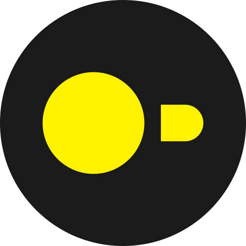

-
 SQLite
SQLite
-

DuckDB
Everything runs locally in your browser (in a Web Worker); nothing is uploaded — pick a copy of the folder if Teams is running.
Pick the folder ending in .indexeddb.leveldb (the one holding
CURRENT, MANIFEST-*, *.ldb/*.log) — not
its parent IndexedDB folder:
Windows
C:\Users\<you>\AppData\Local\Packages\MSTeams_8wekyb3d8bbwe\LocalCache\Microsoft\MSTeams\EBWebView\<profile>\IndexedDB\https_teams.microsoft.com_0.indexeddb.leveldb
macOS
/Users/<you>/Library/Containers/com.microsoft.teams2/Data/Library/Application Support/Microsoft/MSTeams/EBWebView/<profile>/IndexedDB/https_teams.microsoft.com_0.indexeddb.leveldb
<you> is your account username; <profile> is your
Teams profile folder (usually WV2Profile_tfw).

DuckDB